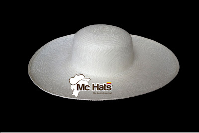

Proceso de Elaboracion
 Cosecha de la paja toquilla (Carludovica palmata)
La paja toquilla cuyo nombre científico es Carludovica palmata es una planta a
semejanza de palmera, que tiene peciolos cuya longitud llega hasta los tres metros al final
de los cuales se abre una hoja verde de la cual se extrae la materia prima (cogollos de paja)
para el tejido del sombrero, después de que se ha sembrado la planta hay que esperar alrededor de tres años para su cosecha.
Esta planta crece en la parte costera del Ecuador.
humedecidos en agua simple con el afán de facilitar el tejido y la uniformidad del mismo, solo entonces se
empieza a tejer el sombrero, proceso que puede durar desde un día hasta semanas, todo será de acuerdo a
la calidad o grado en el que se teja el sombrero.
temperaturas muy altas cuyo objetivo principal es fortalecer sus fibras y darle un color específico,
durante el proceso que tiene un tiempo aproximado de ocho días.
y se utiliza una plancha de carbón con el fin de dar una forma preliminar al sombrero.
con hormas de formas específicas para dar la forma final al sombrero.
los cuales varían según el diseño, tamaño y color del sombrero.